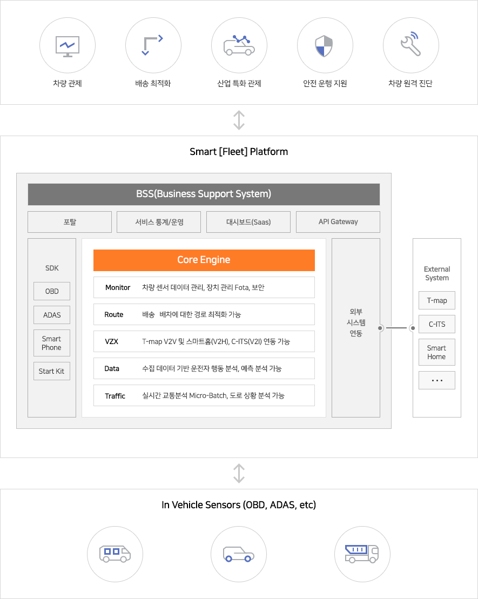

1. Smart[Fleet] 플랫폼 소개¶
Smart[Fleet] 플랫폼은 SK텔레콤(이하 SKT)에서 제공하는 커넥티드카 플랫폼으로 커넥티드카 솔루션을 개발하고자 파트너사들에게 보다 쉽고, 빠르고, 다양한 서비스를 안전하게 개발할 수 있는 다양한 기능들을 제공합니다.
Smart[Fleet] 플랫폼은 아래 그림과 같이 코어 엔진 부분에 차량 모니터링(Monitor), 경로 최적화(Route), 차량과 통신(V2X), 데이터 분석(Data), 교통정보 분석(Traffic) 등의 5개 차량 관제 핵심 기능을 제공합니다.
본 문서는 5개 핵심 기능들과 파트너사들의 장치들이 연동하기 기능개발 절차와 기술 규격에 대해서 정의하고 있습니다.
1.1. 주요 특징¶
- 간편한 API 지원
Smart[Fleet] 플랫폼과 차량 내 센서들간 연동을 쉽게 개발할 수 있도록 간결하고, 다양한 API들을 제공하고 있습니다.
| 구분 | 설명 |
|---|---|
| Simple API | 차량 내 설치되는 센서들(예 : OBD-2, ADAS, GPT 센터 등)에게는 최소한의 API만을 제공하여 개발의 복잡도를 낮춰 드립니다. 이를 위해서 기존에 많이 사용되는 HTTP 프로토콜과 비교하여 저전력, 보다 빠른 데이터 처리, 가벼운 통신 규격을 지원하는 MQTT 프로토콜을 지원하고 있습니다. |
| Useful API | 차량 운행기록, 차량배차 관리, 운전자 운행습관 분석 등과 같은 다양한 서비스를 간편하게 구현할 수 있습니다. 센서 연동 API를 통해서 차량 내 정보를 올려주면 Smart[Fleet] 플랫폼에서 복잡한 분석 절차를 처리하고 RESTful API를 통해 고객들에게 원하는 정보를 제공해드립니다. |
- 유연한 커넥티드카 센서 연동 인터페이스 및 SDK 제공
커네티드 카 솔루션에서 차량 정보 수집 및 제어를 위해서 많이 사용되는 다양한 차량 내 센서들과 연동을 하기 위한 연동 규격을 제공합니다. 그리고 센서들의 품질관리와 보안을 보장하기 위하여 SKT에서는 Certification Program(링크 필요)을 운영합니다.
| 구분 | 설명 |
|---|---|
| 다양한 센서 연동 규격 | OBD-2, ADAS, DTG 센서 또는 스마트폰을 통해서 차량을 관제할 수 있는 유연한 인터페이스를 제공합니다. Smart[Fleet] 프랫폼의 데이터 분석 기능을 활용하기 위해서는 SKT에서 제공하는 메시지 포맷 규약을 따라야 합니다. |
| SDK 제공 | Smart[Fleet] 플랫폼과 센서간의 연동 기능 개발을 보다 쉽게 하실 수 있도록 다양한 언어의 SDK를 제공합니다. 또한 Starter Kit(링크) 솔루션을 활용하여 쉽게 단말 연동 기능 시험 및 프로토타입 솔루션을 기획하실 수 있습니다. |
- 저전력 IoT 전용 네트워크 연결 지원
국내 1위 이동통신망 사업자인 SKT는 IoT 서비스에 최적화된 저전력 기반의 LPWAN(Low Power Wide Area Network) 통신 서비스를 제공하고 있습니다. 특히 커넥티드카 서비스의 핵심 중 하나는 끊김이 없고 안정적인 연결성 보장, 실시간 양방향 데이터 통신, 차량 내 센서 전원 특성을 고려한 저전력 소비 등을 보장하는 무선통신기술이 요구됩니다. 또한 합리적인 가격대의 다양한 무선통신 칩셋과 커넥티드카 전용통신요금도 필요합니다. 이런 특징들을 모두 보장할 수 있는 무선통신망 기술이 LPWAN이며, SKT는 LoRa, LTE-M, LTE-M1 등 국내에서 가장 많은 종류의 LPWAN 통신 서비스를 지원하고 있습니다.
- SKT IoT 솔루션과 연동 지원
Smart[Fleet] 플랫폼의 또 하나의 장점은 시장에서 검증되고 범용화된 SKT의 다양한 IoT 솔루션들과 연동하여 보다 풍부한 커넥티드카 서비스를 구현할 수 있습니다. Smart[Fleet] 플랫폼은 SKT IoT 솔루션인 T map(네비게이션), ThingPlug(개방형 IoT 플랫폼), Smart[Home](스마트홈), 누구(AI 기반의 음성인식) 등과 연동 기능을 제공하고 있으므로 차량뿐만 아니라 보다 다양한 영역에서 활용이 가능한 서비스 시나리오들을 구성할 수 있습니다.
- 원스톱 서비스 지원
SKT는 커넥티드카 솔루션 및 서비스를 기획하는 파트너들의 사업 성공을 위해서 기획부터 기술개발, 서비스 런칭까지 원스톱 서비스를 지원합니다. 또한 사업 런칭 후에도 파트너들의 다양한 요구사항에 대한 전문적인 대응을 통하여 안정적으로 사업이 유지되도록 지원합니다.

1.2. 제공 주요 기능¶
Smart[Fleet] 플랫폼은 파트너업체들이 커넥티드카 단말의 성능 시험이나 시장에서 경쟁력있는 커넥티드카 서비스 개발을 쉽게 할 수 있도록 Smart[Fleet] 포털 및 REST API 등을 통하여 다양한 기능을 제공합니다.